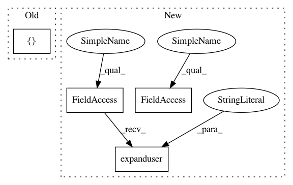

a4087983c09291d50169fd26a158cf07740cae6a,example_configs/speech2text/ds2_small_1gpu.py,,,#,11
Before Change
"noise_level_min": -90,
"noise_level_max": -60},
"vocab_file": "open_seq2seq/test_utils/toy_speech_data/vocab.txt",
"dataset_files": [
"data/librispeech/librivox-train-clean-100.csv",
"data/librispeech/librivox-train-clean-360.csv",
],
"max_duration": None,
"shuffle": True,
},
After Change
base_model = Speech2Text
dataset_location = os.path.expanduser("~/datasets/speech/librispeech/")
base_params = {
"random_seed": 0,
"use_horovod": False,
"num_epochs": 12,
"num_gpus": 1,
"batch_size_per_gpu": 32,
"save_summaries_steps": 100,
"print_loss_steps": 10,
"print_samples_steps": 5000,
"eval_steps": 5000,
"save_checkpoint_steps": 1000,
"logdir": "experiments/librispeech-quick",
"optimizer": "Adam",
"optimizer_params": {},
"lr_policy": exp_decay,
"lr_policy_params": {
"learning_rate": 0.0001,
"begin_decay_at": 0,
"decay_steps": 5000,
"decay_rate": 0.9,
"use_staircase_decay": True,
"min_lr": 0.0,
},
"dtype": tf.float32,
// weight decay
"regularizer": tf.contrib.layers.l2_regularizer,
"regularizer_params": {
"scale": 0.0005
},
"initializer": tf.contrib.layers.xavier_initializer,
"summaries": ["learning_rate", "variables", "gradients", "larc_summaries",
"variable_norm", "gradient_norm", "global_gradient_norm"],
"encoder": DeepSpeech2Encoder,
"encoder_params": {
"conv_layers": [
{
"kernel_size": [11, 41], "stride": [2, 2],
"num_channels": 32, "padding": "SAME"
},
{
"kernel_size": [11, 21], "stride": [1, 2],
"num_channels": 32, "padding": "SAME"
}
],
"num_rnn_layers": 2,
"rnn_cell_dim": 512,
"use_cudnn_rnn": True,
"rnn_type": "cudnn_gru",
"rnn_unidirectional": False,
"row_conv": False,
"n_hidden": 1024,
"dropout_keep_prob": 0.5,
"activation_fn": tf.nn.relu,
"data_format": "channels_first",
},
"decoder": FullyConnectedCTCDecoder,
"decoder_params": {
"use_language_model": False,
// params for decoding the sequence with language model
"beam_width": 512,
"alpha": 2.0,
"beta": 1.0,
"decoder_library_path": "ctc_decoder_with_lm/libctc_decoder_with_kenlm.so",
"lm_path": "language_model/4-gram.binary",
"trie_path": "language_model/trie.binary",
"alphabet_config_path": "open_seq2seq/test_utils/toy_speech_data/vocab.txt",
},
"loss": CTCLoss,
"loss_params": {},
}
train_params = {
"data_layer": Speech2TextDataLayer,
"data_layer_params": {
"num_audio_features": 96,
"input_type": "spectrogram",
"augmentation": {"time_stretch_ratio": 0.05,
"noise_level_min": -90,
"noise_level_max": -60},
"vocab_file": "open_seq2seq/test_utils/toy_speech_data/vocab.txt",
"dataset_files": [
os.path.join(dataset_location,"librivox-train-clean-100.csv"),
os.path.join(dataset_location,"librivox-train-clean-360.csv"),
],
"max_duration": 16.7,
"shuffle": True,
},
}
eval_params = {
"data_layer": Speech2TextDataLayer,
"data_layer_params": {
"cache_features": False,
"cache_format": "hdf5",
"cache_regenerate": False,
"num_audio_features": 96,
"input_type": "spectrogram",
"vocab_file": "open_seq2seq/test_utils/toy_speech_data/vocab.txt",
"dataset_files": [
os.path.join(dataset_location,"librivox-dev-clean.csv"),
],
"shuffle": False,
},
In pattern: SUPERPATTERN
Frequency: 3
Non-data size: 4
Instances
Project Name: NVIDIA/OpenSeq2Seq
Commit Name: a4087983c09291d50169fd26a158cf07740cae6a
Time: 2018-11-13
Author: matthijsv@nvidia.com
File Name: example_configs/speech2text/ds2_small_1gpu.py
Class Name:
Method Name:
Project Name: NVIDIA/OpenSeq2Seq
Commit Name: a4087983c09291d50169fd26a158cf07740cae6a
Time: 2018-11-13
Author: matthijsv@nvidia.com
File Name: example_configs/speech2text/ds2_small_1gpu.py
Class Name:
Method Name:
Project Name: home-assistant/home-assistant
Commit Name: 18e32165a49f2eb354b07167345668163d537344
Time: 2015-08-29
Author: rmkraus@gmail.com
File Name: homeassistant/__main__.py
Class Name:
Method Name:
Project Name: nipy/dipy
Commit Name: a09d813649375dc159bcf6e1daf98ecc4cf4d980
Time: 2015-07-12
Author: garyfallidis@gmail.com
File Name: doc/examples/viz_slice.py
Class Name:
Method Name: